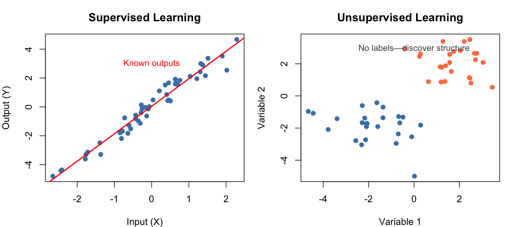

30 Introduction to Statistical Learning
30.1 What is Statistical Learning?
Statistical learning refers to a vast set of tools for understanding data. These tools can be classified as supervised or unsupervised. Broadly speaking, supervised statistical learning involves building a statistical model for predicting, or estimating, an output based on one or more inputs. With unsupervised statistical learning, there are inputs but no supervising output; nevertheless we can learn relationships and structure from such data (James et al. 2023; Hastie, Tibshirani, and Friedman 2009).
Statistical learning emerged from statistics but has been heavily influenced by fields such as computer science and artificial intelligence. The term machine learning is often used interchangeably, though machine learning tends to emphasize prediction and computational efficiency, while statistical learning places more emphasis on interpretability and uncertainty quantification.
30.2 From Inference to Prediction
Traditional statistics emphasizes inference—understanding relationships, testing hypotheses, and quantifying uncertainty. Statistical learning shifts focus toward prediction—building models that accurately predict outcomes for new data.
Both approaches use similar mathematical tools, but the goals differ:
| Goal | Questions | Methods | Output |
|---|---|---|---|
| Inference | Which variables are associated? How strong is the relationship? Is the effect significant? | Linear regression, hypothesis testing, confidence intervals | Understanding, p-values, effect sizes |
| Prediction | What will happen for new observations? How can we minimize prediction error? | Cross-validation, regularization, ensemble methods | Predictions, prediction intervals |
In practice, most analyses involve elements of both. A biologist might want to predict disease outcomes (prediction) while also understanding which genes drive the prediction (inference).
30.3 Key Components of Statistical Learning
Regardless of the specific method, statistical learning problems share common elements:
Inputs and Outputs
We have data consisting of observations on variables. Input variables (also called predictors, features, or independent variables) are denoted \(X\). Output variables (also called response or dependent variables) are denoted \(Y\).
In supervised learning, we observe both inputs and outputs:
\[\{(x_1, y_1), (x_2, y_2), \ldots, (x_n, y_n)\}\]
In unsupervised learning, we observe only inputs:
\[\{x_1, x_2, \ldots, x_n\}\]
The Learning Task
The goal of supervised learning is to find a function \(f\) such that:
\[Y \approx f(X)\]
This function captures the systematic relationship between inputs and outputs. The quality of \(f\) is measured by how well it predicts \(Y\) for new observations.
Training and Test Data
A fundamental practice in statistical learning is splitting data into two portions. The training data is used to build the model—the algorithm learns patterns and estimates parameters from these observations. The test data is held out and never seen during training; it serves solely to evaluate how well the model generalizes to new observations.
This separation is crucial because models can “memorize” training data without learning generalizable patterns—a phenomenon called overfitting. A model that perfectly fits the training data but fails on new observations is useless in practice. By evaluating on held-out test data, we obtain an honest estimate of how our model will perform in the real world.
Model Complexity
Every statistical learning method must navigate the bias-variance tradeoff, a fundamental tension that shapes how we build models. Simple models with few parameters may be too rigid to capture the true patterns in data, leading to systematic errors known as high bias. These models underfit—they miss important structure because they lack the flexibility to represent it.
At the other extreme, complex models with many parameters have the opposite problem. They can capture intricate patterns, but they may also fit the noise specific to the training data rather than the underlying signal. This sensitivity to the particular training sample is called high variance, and it leads to overfitting—excellent performance on training data but poor generalization to new observations.
The optimal model balances these competing concerns. Too simple and you underfit; too complex and you overfit. This tradeoff is captured by the familiar U-shaped curve of test error versus model complexity: error decreases as we add flexibility to capture true patterns, then increases as the model begins fitting noise.
30.4 Categories of Statistical Learning
Statistical learning methods fall into several broad categories:
Supervised vs. Unsupervised Learning
Supervised learning problems have labeled data—we know the correct output for each observation. The task is to learn a mapping from inputs to outputs that generalizes to new data. Supervised learning takes two main forms depending on the nature of the output variable. When the output is continuous—such as predicting gene expression levels, blood pressure, or reaction rates—we call this regression. When the output is categorical—such as predicting disease status, cell type, or treatment response—we call this classification.
Unsupervised learning problems have no labeled outputs. Instead, we seek to discover patterns, groupings, or structure in the data without guidance about what we’re looking for. Clustering methods group similar observations together, revealing natural categories in the data such as patient subtypes or cell populations. Dimensionality reduction methods find lower-dimensional representations that capture most of the information, making high-dimensional data easier to visualize and analyze.
Parametric vs. Non-Parametric Methods
Parametric methods assume a specific functional form for \(f\). For example, linear regression assumes \(f(X) = \beta_0 + \beta_1 X_1 + \ldots + \beta_p X_p\)—a weighted sum of the predictors. Once we commit to this functional form, the learning problem reduces to estimating a finite number of parameters (the \(\beta\) coefficients) from training data.
This approach has important advantages. Parametric methods are computationally efficient because we only need to estimate a fixed number of parameters regardless of sample size. They produce interpretable models where each coefficient has a clear meaning. And they work well with smaller samples because the strong assumptions reduce what must be learned from data. The disadvantage is that if the true relationship differs substantially from the assumed form, the model will be systematically wrong no matter how much data we collect.
Non-parametric methods make no explicit assumptions about the form of \(f\). Instead, they let the data determine the shape of the relationship. Methods like K-nearest neighbors, decision trees, and kernel smoothing estimate \(f\) directly without assuming a particular functional form. This flexibility allows non-parametric methods to capture complex, non-linear relationships that would be missed by rigid parametric assumptions. However, this flexibility comes at a cost: non-parametric methods typically require more data to achieve comparable accuracy, are more prone to overfitting, and often produce models that are harder to interpret.
Flexible vs. Inflexible Methods
Statistical learning methods span a spectrum of flexibility:
| Method | Flexibility | Interpretability | Typical Use |
|---|---|---|---|
| Linear regression | Low | High | When linearity is reasonable |
| Ridge/Lasso | Low | High | High-dimensional linear problems |
| K-nearest neighbors | Medium-High | Low | Non-linear patterns |
| Decision trees | Medium | High | Interpretable non-linear models |
| Random forests | High | Medium | General-purpose prediction |
| Support vector machines | High | Low | Complex boundaries |
| Neural networks | Very high | Very low | Image, text, complex patterns |
30.5 Overview of Methods Covered
This section of the book covers the major categories of statistical learning, building from foundational concepts to increasingly sophisticated methods.
Model Validation and Selection
Before diving into specific methods, we need tools for evaluating and comparing models. How do we know if a model will perform well on new data? Cross-validation provides a principled answer by repeatedly holding out portions of the data to estimate generalization performance. Loss functions quantify prediction errors, giving us a concrete measure of model quality. Understanding the bias-variance tradeoff guides our choices about model complexity, helping us find the sweet spot between underfitting and overfitting. These concepts, covered in Chapter 31, form the foundation for everything that follows.
Regularization
When we have many predictors relative to our sample size, standard regression can overfit badly. Regularization methods address this by adding penalties that shrink coefficients toward zero, reducing variance at the cost of a small increase in bias. Ridge regression shrinks all coefficients proportionally, stabilizing estimates when predictors are correlated. Lasso goes further by shrinking some coefficients exactly to zero, effectively performing variable selection. Elastic net combines both penalties, offering the best of both worlds. These methods, covered in Chapter 32, are essential tools for modern high-dimensional data analysis.
Smoothing Methods
Many biological relationships are non-linear, yet we want to estimate smooth curves without assuming a specific functional form. Smoothing methods accomplish this through local averaging. Kernel smoothing estimates each point as a weighted average of nearby observations. Splines fit piecewise polynomials that join smoothly at specified knots. LOESS combines local polynomial fitting with distance-based weighting. These flexible curve-fitting methods, covered in Chapter 33, reveal patterns that linear models would miss.
Classification
Many biological problems involve predicting categories rather than continuous values: disease versus healthy, one cell type versus another, responsive versus non-responsive. K-nearest neighbors offers a simple, intuitive approach—classify based on the majority vote of similar training cases. Evaluating classifier performance requires tools like confusion matrices, which reveal patterns of errors, and ROC curves, which show how sensitivity and specificity trade off at different decision thresholds. These classification fundamentals are covered in Chapter 34.
Tree-Based Methods
Decision trees take a fundamentally different approach to prediction: they partition the predictor space into rectangular regions using a series of yes/no questions. The resulting models are highly interpretable—essentially flowcharts for making predictions. However, individual trees tend to be unstable. Random forests address this by averaging many trees, each trained on a bootstrap sample with random feature selection, dramatically improving prediction accuracy while providing measures of variable importance. Tree-based methods are covered in Chapter 35.
Support Vector Machines
Support vector machines find optimal boundaries between classes by maximizing the margin—the distance to the nearest training points. This geometric approach leads to robust classifiers that depend only on a few critical observations called support vectors. The kernel trick extends SVMs to non-linear boundaries by implicitly mapping data to higher-dimensional spaces. SVMs can also be adapted for regression through support vector regression. These powerful methods are covered in Chapter 36.
Clustering
Sometimes we want to discover natural groupings in data without predefined labels. Clustering methods accomplish this by grouping similar observations together. Hierarchical clustering builds a tree of nested groupings, visualized through dendrograms that reveal relationships at multiple scales. K-means directly partitions data into a specified number of clusters by iteratively refining cluster centers. Heatmaps combine clustering with visual display of high-dimensional data. Clustering methods are covered in Chapter 37.
Dimensionality Reduction
Modern biological data often has many more variables than observations—thousands of genes measured on dozens of samples, for instance. Dimensionality reduction creates a smaller set of new variables that capture most of the information. Principal Component Analysis (PCA) finds linear combinations that maximize variance, often revealing the major axes of variation in complex datasets. For visualization of non-linear structure, t-SNE and UMAP project high-dimensional data to two dimensions while preserving local neighborhoods. These methods are covered in Chapter 38 and Chapter 39.
Bayesian Approaches
The Bayesian framework offers a different perspective on statistical inference, treating parameters as random variables with probability distributions rather than fixed unknowns. Bayes’ theorem provides a principled way to update beliefs in light of evidence. Hierarchical models allow borrowing strength across related observations, producing more stable estimates when individual samples are small. Credible intervals offer direct probability statements about parameters—“there is a 95% probability the true value lies in this interval”—which many find more intuitive than frequentist confidence intervals. Bayesian methods are covered in Chapter 40.
Deep Learning
Neural networks with many layers—deep learning—have revolutionized fields like image recognition and natural language processing. Unlike the methods above, deep learning can automatically learn features from raw data rather than requiring hand-crafted predictors. The chapter on deep learning (Chapter 41) provides a conceptual introduction: how deep learning differs from traditional statistical learning, the major architectures (feedforward, convolutional, and recurrent networks), and guidance on when deep learning is appropriate versus when classical methods suffice.
30.6 Choosing the Right Method
With so many methods available, how do you choose the right one for your problem? The answer depends on several considerations that must be weighed together.
First, consider your goal. Are you primarily interested in prediction—getting the most accurate forecasts for new observations? Or do you need inference—understanding which variables matter and how they relate to the outcome? Or perhaps you are in an exploratory phase, trying to discover structure and generate hypotheses? Methods that excel at prediction (like random forests) may sacrifice interpretability, while methods optimized for inference (like linear regression) may sacrifice predictive accuracy.
Second, consider your data characteristics. How many observations do you have? How many predictors? Are variables continuous, categorical, or mixed? Complex methods like neural networks require large samples; simpler methods can work well with limited data. High-dimensional settings where predictors outnumber observations require special techniques like regularization.
Third, consider interpretability needs. In some contexts—exploratory research, personal curiosity—a black-box prediction is fine. In others—clinical decision-making, regulatory submissions—you must be able to explain why the model makes the predictions it does. Methods like decision trees and linear regression are inherently interpretable; methods like random forests and neural networks are not.
Finally, consider practical constraints. Some methods scale well to large datasets while others become computationally prohibitive. Some require specialized hardware (GPUs for deep learning), while others run efficiently on any laptop.
There is no universally best method. The No Free Lunch theorem formalizes this intuition: no single algorithm works best for all problems. The best approach is often to try multiple methods and compare their performance using proper validation techniques, letting the data guide your final choice.
30.7 The Statistical Learning Workflow
A typical statistical learning analysis follows a structured workflow that helps ensure reliable results (Figure 30.2). The process begins with clearly defining the problem: What are you trying to predict or understand? What would a useful answer look like? This clarity guides all subsequent decisions.

With the problem defined, the next phase is data preparation. Real data is messy—missing values, outliers, inconsistent formatting, variables on incompatible scales. Careful cleaning and transformation are essential before modeling. This is also when you split your data into training and test sets, setting aside the test data for final evaluation.
Before fitting models, explore the training data thoroughly. Examine distributions, look for outliers, visualize relationships between predictors and outcomes. This exploration often reveals issues that would derail modeling and suggests which methods might work well.
The modeling phase involves selecting candidate methods appropriate for your problem, fitting them to training data, and tuning hyperparameters using cross-validation. It often makes sense to try several different approaches—perhaps a simple linear model, a random forest, and a regularized regression—to see which performs best.
Once you have tuned models, evaluate them on the held-out test data. This provides an honest estimate of how well each approach will generalize to new observations. Choose your final model based on this evaluation, considering both performance and interpretability.
Finally, interpret what the model has learned and deploy it to make predictions on new data. Throughout this process, guard vigilantly against data leakage—any way that information from the test set might influence training decisions. Keep the test set locked away until final evaluation; peeking at test performance to guide model selection invalidates your estimates.
30.8 Statistical Learning in Biology and Bioengineering
Statistical learning has transformed biological research across virtually every subdiscipline. In genomics, machine learning methods predict gene expression from sequence features, identify regulatory elements that control transcription, and classify disease subtypes from expression profiles. The ability to analyze thousands of genes simultaneously has made these methods essential for modern molecular biology.
In proteomics, statistical learning predicts protein structure and function from amino acid sequences, identifies biomarkers that distinguish disease states, and characterizes protein-protein interactions. The recent triumph of AlphaFold in predicting three-dimensional protein structure represents perhaps the most dramatic success of machine learning in biology.
Drug discovery increasingly relies on computational methods to predict drug-target interactions, optimize molecular properties, and identify promising compounds before expensive laboratory testing. These methods accelerate the pipeline from target identification to clinical trials.
Medical imaging has been transformed by deep learning, with algorithms that detect tumors in radiographs, classify cell types in histology slides, and segment anatomical structures in MRI scans. In many tasks, these systems now match or exceed human expert performance.
In ecology, statistical learning methods model species distributions from environmental predictors, forecast population dynamics, and identify factors that drive community composition. These tools are essential for conservation planning and understanding responses to environmental change.
In bioengineering, machine learning optimizes bioreactor conditions for protein production, predicts material properties from composition, and designs synthetic biological systems. As biological engineering becomes increasingly data-driven, these methods will only grow in importance.
The methods in this section provide the foundation for tackling all these problems. As biological data continues to grow in scale and complexity, statistical learning will become even more essential.
30.9 Summary
This chapter has introduced the landscape of statistical learning—the broad family of methods for understanding data through modeling. We distinguished supervised learning, which predicts outputs from inputs using labeled training data, from unsupervised learning, which discovers structure in data without predefined labels.
Within supervised learning, parametric methods assume specific functional forms and estimate a fixed number of parameters, while non-parametric methods let the data determine the shape of the relationship. Each approach involves tradeoffs: parametric methods are efficient and interpretable but may be too restrictive; non-parametric methods are flexible but require more data and can be harder to interpret.
The bias-variance tradeoff runs through all of statistical learning. Simple models may underfit, missing important patterns (high bias). Complex models may overfit, fitting noise rather than signal (high variance). Finding the right balance requires model validation using held-out data to honestly assess how well our models generalize to new observations.
Choosing the right method for a particular problem depends on your goals (prediction versus inference), data characteristics (sample size, number of predictors), interpretability needs, and computational constraints. There is no universally best method—the right choice depends on context.
The following chapters cover specific methods in detail: model validation and cross-validation, regularization methods for high-dimensional problems, smoothing and non-parametric regression, classification and performance evaluation, tree-based methods including random forests, support vector machines, clustering, dimensionality reduction, and Bayesian approaches. A final chapter introduces deep learning as a powerful extension of these concepts, discussing when neural networks are appropriate and how they differ from classical statistical learning methods.